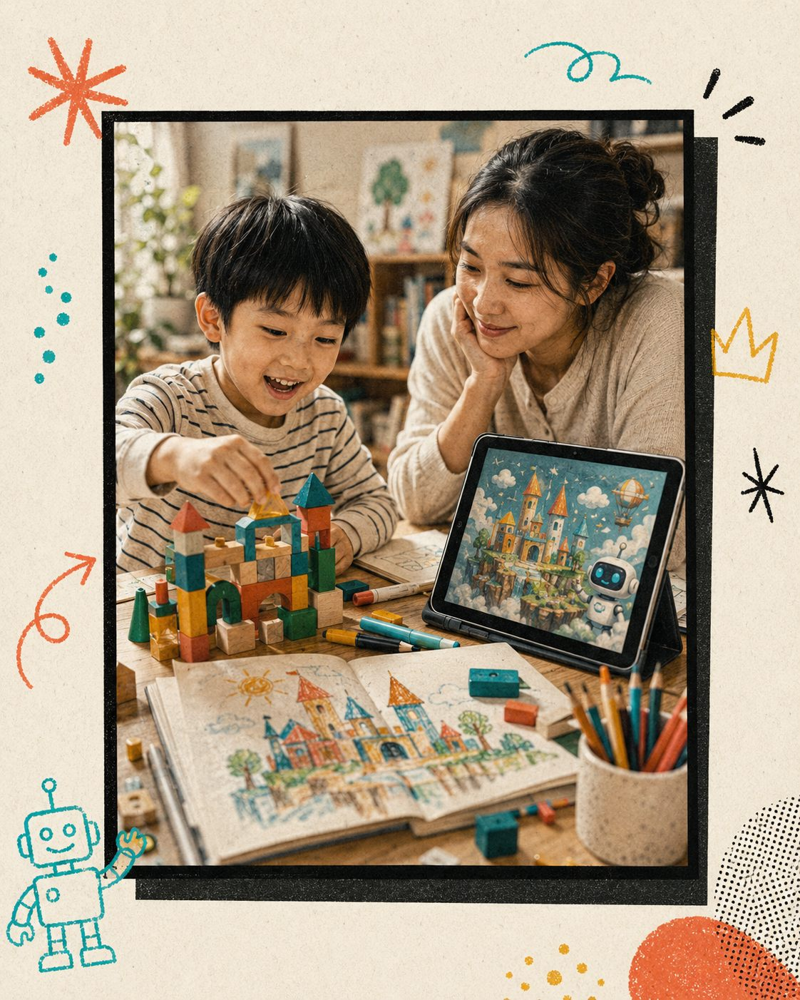
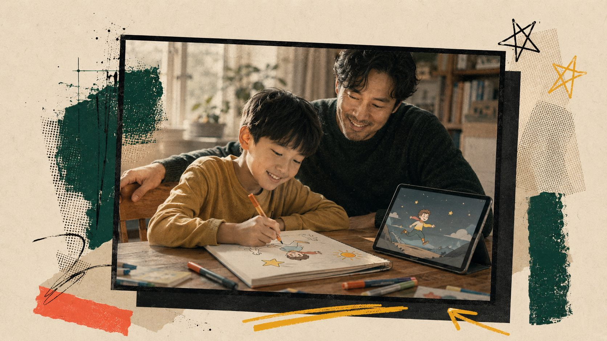
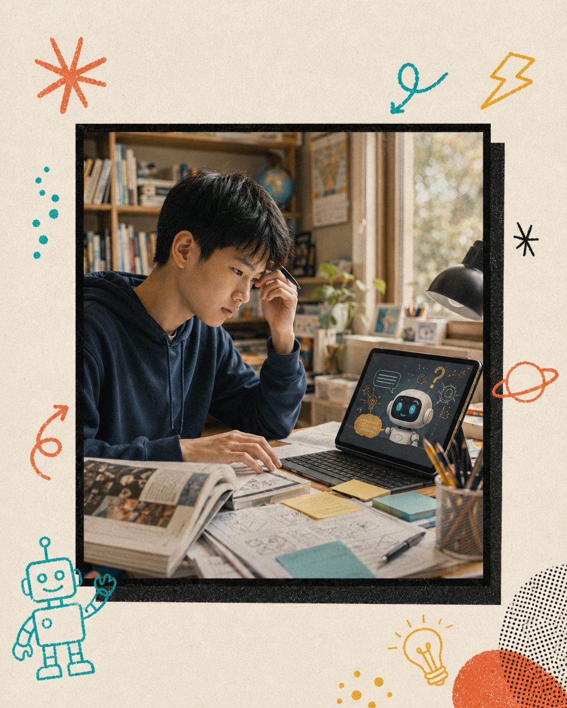
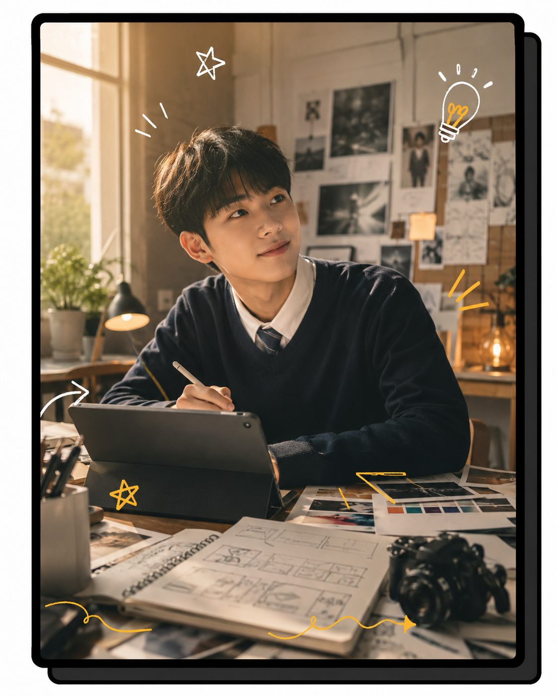

國小 · 6–12 歲
玩中學：用 AI 把想像變出來
用畫筆、積木搭配 AI，把孩子的塗鴉變故事、變動畫。重點不是操作軟體，是「我想得到、我做得出來」的成就感與主動性。家長全程陪玩。
- check 創造力 × 表達力啟蒙
- check 螢幕使用的健康習慣
AI 時代最大的風險，不是孩子不會用工具，是被螢幕餵養、被演算法決定，長成一個「被動」的人。 404 Kids 從國小到高中，陪孩子和家長一起，把孩子養成「拿筆創造」的那一個。

被短影音餵著看、被演算法決定喜好、把問題丟給 AI 抄答案。久了，孩子失去提問、判斷與創造的能力——這才是真正的「被淘汰」。
把 AI 當成創造的工具，而不是答案的販賣機。會提問、會判斷對錯、會用 AI 把腦中的想法做出來。從小就是那個「拿筆的人」。
不是越早學寫程式越好，而是在對的年紀，給對的素養。每一階段都從「動手創造」出發。

用畫筆、積木搭配 AI，把孩子的塗鴉變故事、變動畫。重點不是操作軟體，是「我想得到、我做得出來」的成就感與主動性。家長全程陪玩。

用 AI 做專題研究、查證資料、整理思路——但學會質疑它、查核它，不照單全收。培養判斷力與資訊素養，這比答案本身更重要。

用 AI 規劃學習歷程、做出個人作品集、探索興趣與未來方向。讓孩子在升學與職涯前，就先成為一個會用 AI 創造價值的人。
AI 變得太快，把孩子丟進來、家長在門外滑手機，是沒有用的。孩子的素養，是在家裡的餐桌上養成的。 所以 404 Kids 堅持親子共學——家長不是旁觀者，是同學。你跟孩子一起學，回家才接得住他。
家長同步上課
回家能延續
安全使用觀念
教 AI 素養：提問、判斷、創造、不被工具決定
強調 親子共學，把素養帶回餐桌
不是兒童 寫程式 或「把孩子變工程師」
不是塞滿時間的 才藝班 / 安親班
留下聯絡方式，我們會寄送最新梯次、分齡建議與一堂親子體驗課的資訊。第一步，從一起坐下來開始。